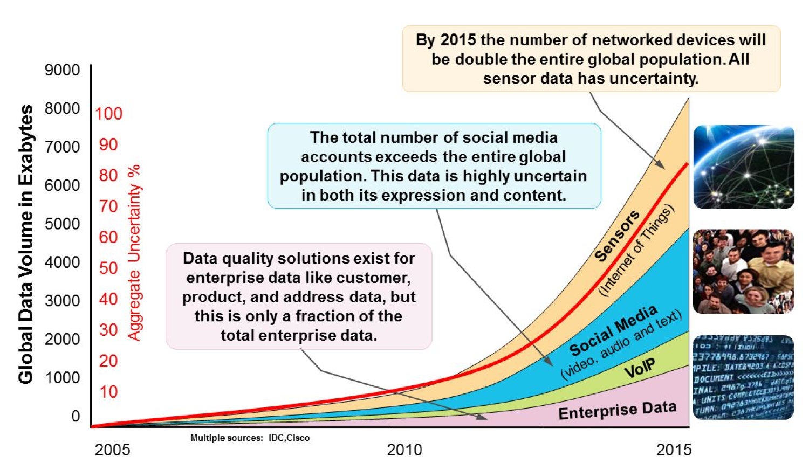

Deze slides horen bij de cursus Big Data System Design.
Systemen waarin data zó snel groeit dat de kosten van opslag en verwerking per datapunt hoger wordt dan de waarde er van.

De toename van het volume van data stelt nieuwe eisen aan de manier waarop we data opslaan (storage) en aan de manier waarop we data opvragen (retrieval).
Tegelijkertijd is het steeds belangrijker dat de snelheid (velocity) van dataverwerking niet afneemt.
Ook de variëteit (variety) aan opgeslagen data verandert: er wordt per jaar bijna drie keer zo veel ongestructureerde data opgeslagen als gestructureerde data.
Het belang – en dus ook de waarde Value – van data in bedrijven neemt toe.
Voor sommige bedrijfsprocessen hoeft data niet per se 100% de werkelijkheid weer te geven veracity.
Onderwerpen die we bespreken:
Alle stof staat ook beschreven via de Canvas-site die hoort bij deze cursus.
Op woensdag (maar in week 3 op dinsdag) is er een centraal hoorcollege met beide klassen. Op vrijdag is er steeds een werkcollege waarin per klas aan opdrachten gewerkt wordt: de A-klas in HL15-3.100 en de B-klas in HL15-4.020.
De stof per dag is als volgt:
| Week | Dag | Lokatie | Onderwerp | Opdracht | Voorbereiding | |
|---|---|---|---|---|---|---|
| 1 | wo 13 nov | HL15-Collegezaal 4 | Introductie; NoSQL, Big Data | |||
| 1 | vr 15 nov | HL15-3.100 (klas A)/ 4.020 (klas B) | Opdracht 1 | |||
| 2 | woe 21 nov | HL15-1.022, HL15-1.024 | ADD, Apache ecostructuur | Kazman, ch. 2 | ||
| 2 | vr 23 nov | HL15-3.100 / 4.020 | Opdracht 2 | |||
| 3 | di 26 nov | HL15-Collegezaal 4 | Nog meer architecturen, HDFS, dataopslag | |||
| 3 | vr 29 nov | HL15-3.100 / 4.020 | Opdracht 3 | |||
| 4 | wo 4 dec | HL15-Collegezaal 4 | Streams & Apache; Spark | |||
| 4 | vr 6 dec | HL15-3.100 / 4.020 | Opdracht 4 | |||
| 5 | wo 11 dec | HL15-Collegezaal 4 | Casus: actuele systemen | Case-study streaming Netflix | ||
| 5 | vr 13 dec | HL15-3.100 / 4.020 | ||||
| 6 | wo 18 dec | HL15-Collegezaal 4 | ||||
| 6 | vr 20 dec | HL15-3.100 / 4.020 | Proeftentamen |
Deze cursus werd ook in februari 2019 gegeven. De stof die we toen hebben aangeboden is nog beschikbaar in de archiefsite februari 2019.